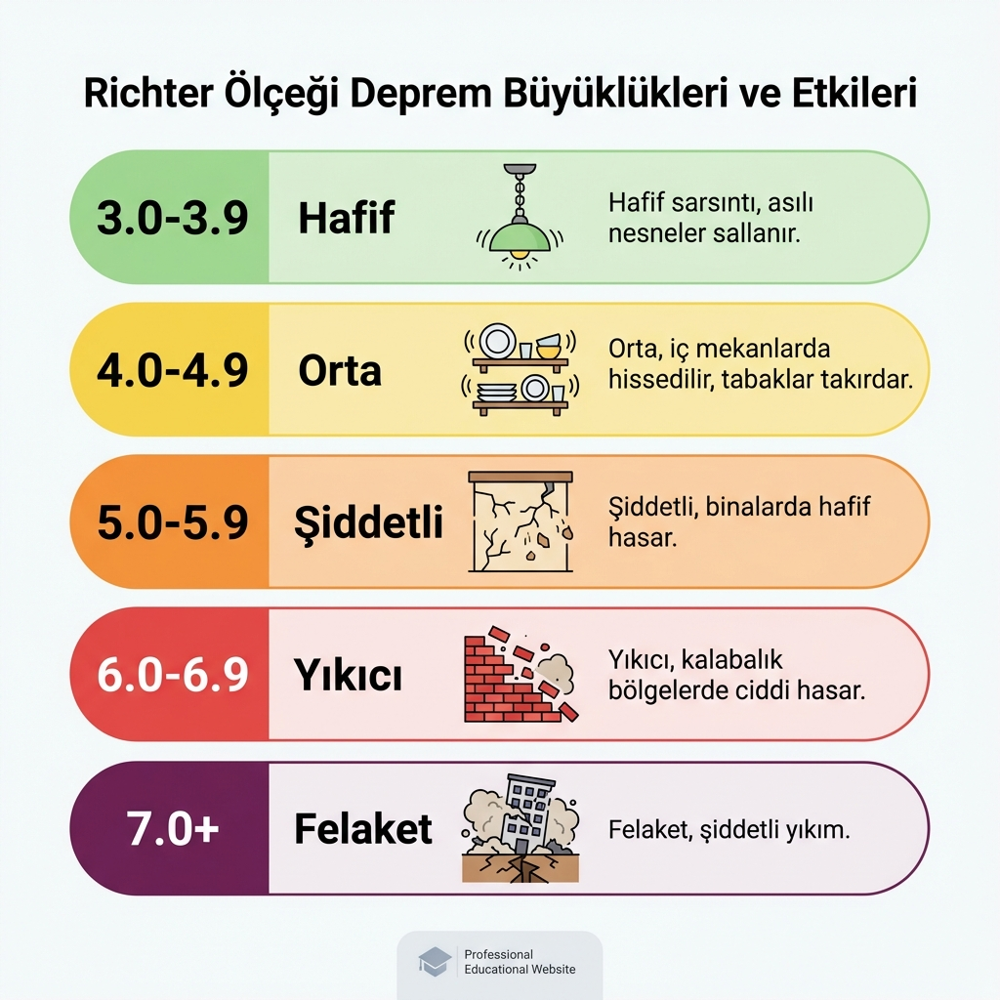
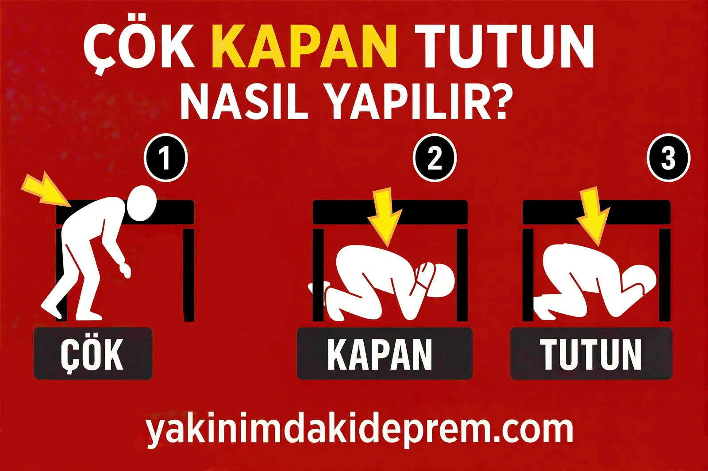

Deprem, Türkiye'nin jeolojik gerçeğidir. Ülkemiz, Kuzey Anadolu Fay Hattı (KAF), Doğu Anadolu Fay Hattı (DAF) ve Batı Anadolu Fay Hattı (BAF) üzerinde yer aldığından, aktif bir deprem kuşağındadır.
Yakınımdaki Deprem ile anlık deprem, son depremler, deprem mi oldu ve deprem son dakika sorgularını Kandilli Rasathanesi verilerini temel alarak gösteriyoruz. Resmi duyuru ve acil bilgilendirmeler için ayrıca AFAD kaynaklarını takip etmenizi öneririz. Haritamızda kırmızı ile işaretlenen alanlar yüksek riskli bölgeleri, yeşil alanlar ise daha düşük sismik hareketliliği temsil eder. İstanbul deprem, İzmir deprem ve Ankara deprem aramalarına saniyeler içinde cevap almak için haritayı ve listeyi sık sık yenileyin.

Deprem olduğu anda en doğru bilgiye ulaşmak hayati önem taşır. Sitemiz deprem verilerini Kandilli Rasathanesi kaynaklı API üzerinden sunar. Resmi doğrulama ve bilgilendirme için şu kaynakları takip edebilirsiniz:
Google'da en çok aranan deprem sorgularını tek ekranda karşılıyoruz: anlık deprem haritası, son depremler, deprem mi oldu ve şehir bazında deprem son dakika sonuçları.
Bu sorgular için sayfayı yer imlerine ekleyin; veriler otomatik yenilenir ve harita odak düğmesi ile doğrudan Türkiye geneline gidebilirsiniz.
Türkiye'de her gün yüzlerce mikro deprem olmaktadır. Eğer sarsıntı hissettiyseniz, anasayfamızdaki "Son Depremler" listesinden en güncel verileri kontrol ediniz. Listemiz her 20 saniyede bir güncellenmektedir.
İstanbul deprem, İzmir deprem ve Ankara deprem gibi şehir sorgularını "Önemli Bağlantılar" kutusundaki hızlı linklerden ve ana haritadan takip edebilirsiniz. AFAD/Kandilli verileri dakikalar içinde yenilenir.
Verilerimiz doğrudan AFAD ve Kandilli Rasathanesi API'lerinden anlık olarak çekilmektedir. Resmi verilerle birebir aynıdır ve gecikmesiz yansıtılır.
Deprem anında panik yapmadan Çök - Kapan - Tutun hareketini uygulayın. Sağlam bir eşyanın yanına çömelin, başınızı koruyun ve sarsıntı geçene kadar bekleyin. Detaylı bilgi için Deprem Anında rehberimizi okuyun.

Deprem Anında Güvenlik
Haritadan sonra gelen bu mini rehber, deprem anında reflekslerinizi güçlendirmek için hazırlandı. Çök-Kapan-Tutun tekniği; düşen nesnelerden korunmanızı, baş ve boyun bölgesini güvenceye almanızı ve sarsıntı bitene kadar sabit kalmanızı sağlar.
Elektriklerin kesildiği, merdivenlerin kalabalık olduğu senaryolarda bu üç adım hayat kurtarır. Ailenizle birlikte düzenli tatbikat yaparak kas hafızasını güçlendirin, daha kapsamlı bilgiler için Deprem Anında rehberimizi inceleyin.